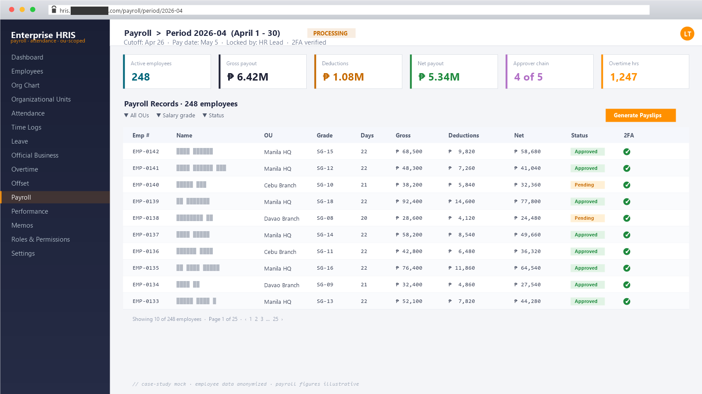

Enterprise HRIS
Modern HR information system on Laravel 12 + Vuestic Admin (Vite)
A full HR information system covering the entire employee lifecycle — organizational units, employee records, time + attendance, leave, payroll, memos with workflow, performance evaluations, official business / overtime / offset requests, and a granular OU-scoped RBAC. Modern stack: Laravel 12 API with TOTP 2FA, Vuestic Admin frontend on Vite + Pinia + TypeScript, AG Grid Enterprise tables, CI/CD on Jenkins + Buddy.
HR ran on shared spreadsheets + email threads for every employee change.
95-page consolidated system with role-aware access across 54 domain models.
Password-only auth gating sensitive employee + payroll data.
TOTP 2FA-gated access with per-role permissions enforced server-side.
Documentation drifted faster than code; onboarding hit stale instructions.
Docs co-located with code under /docs; loose root-level .md ages out within 3 months by rule.
What it is
A modern HRIS used by an enterprise HR + operations team to run the complete employee lifecycle — from hire (records, contacts, documents, certifications, training history) through daily ops (attendance, leave, official-business, overtime, offset, memos) to payroll (periods, records, government contributions, tax tables, 13th-month) and performance evaluations — under OU-scoped RBAC with TOTP 2FA.
Built on Laravel 12 (PHP 8.2+) with Sanctum auth and Google Authenticator
2FA (pragmarx/google2fa-laravel + QR codes via
bacon/bacon-qr-code). Frontend is Vuestic Admin
on Vite, Vue 3 + TypeScript, Pinia state, Vue Router, Vue i18n, AG Grid
Enterprise. Ships with Storybook for design-system discipline, a Playwright
e2e workspace, and CI/CD on both Jenkins and Buddy.
The bottleneck
HR ran on spreadsheets and standalone tools per process — a payroll workbook, a leave-tracker, a time-sheet exporter, a Word-template memo flow, a separate sheet for offsets. Nothing talked to anything. Specific friction:
- Memo numbering collisions when two people drafted simultaneously, and no audit trail for who saw what.
- Leave balances drifted between the spreadsheet and the actual payroll deduction.
- Attendance from biometric exports had to be hand-reconciled against schedules, shift assignments, and approved overtime / official-business slips.
- No clear OU-scoped view — a Manila supervisor could accidentally see another branch’s payslips.
- 2FA was “send the same password over chat” — auth security was a real concern as the platform consolidated payroll data.
HR needed one platform where the time logs, the schedule, the approvals, the payroll record, and the audit trail all live on the same row of the same table — with per-OU access and real auth security.
How I broke it down
- Modern stack from day one. Laravel 12 + Vue 3 + Vite + Pinia + TypeScript. Took advantage of Laravel 12’s slimmer kernel and Vite’s rebuild speed instead of inheriting the slower Vue CLI toolchain from earlier projects.
- Domain modelling per HR concept. 54 explicit models,
one concern each —
Employee+EmployeePersonalInfo+EmployeeContact+EmployeeDocument+EmployeeAllowance+EmployeeDeduction+EmployeeCertification+EmployeeTraining+EmploymentHistory— instead of one fat “employee” row. - OU-scoped RBAC as a first-class concern.
OrganizationalUnit+Role+Permission+RolePermission+RoleOrganizationalUnit. A role can be assigned per OU, and every payroll / employee / memo query checks both role permission AND OU scope. - TOTP 2FA built in.
pragmarx/google2fa-laravelfor the algorithm,bacon/bacon-qr-codeto render the QR for enrollment in Google Authenticator / Authy.LoginAttemptmodel tracks every attempt for anomaly review. - Concurrency-safe memo numbering. Memo numbers must be
strictly sequential per OU per year, so allocation uses MySQL
GET_LOCKadvisory locks — two simultaneous drafts can’t collide on the same number. - Dynamic menu system.
Module+Menu+RolePermissiondrives the sidebar at runtime — pages a user can’t access simply don’t appear. Documented inDYNAMIC_MENU_SYSTEM.mdat the repo root. - Storybook + Playwright for UI discipline. Components
get stories; flows get e2e tests in the
e2e/workspace. - CI/CD on two pipelines. Jenkinsfile for on-prem builds,
buddy.ymlfor cloud-driven deploys. Same build target, different triggers.
What I built
Domain modules shipped:
- Employee records —
Employee,EmployeePersonalInfo,EmployeeContact,EmployeeDocument,EmployeeAllowance,EmployeeDeduction,EmployeeCertification,EmployeeTraining,EmploymentHistory. A full HR jacket per person. - Organizational units —
OrganizationalUnittree with org-chart visualization (pages/org-chart), per-OU role bindings, and OU scoping baked into every list query. - Time & attendance —
TimeLog,AttendanceRecord,Shift,ShiftAssignment,WorkSchedule,WorkScheduleAssignment,Holiday. Reconciles biometric input against the schedule and approved exceptions. - Leave —
LeaveType,LeaveBalance,LeaveEntitlementTier,LeaveRequest. Tier-driven entitlements with balance tracking that the payroll module reads from. - Official Business · Overtime · Offset —
OfficialBusinessRequest,OvertimeRequest,OffsetRequest,OffsetEarning,OffsetBalance. Approval-routed exception forms that flow back into attendance + payroll. - Payroll —
PayrollPeriod,PayrollRecord,PayrollSetting,SalaryGrade,AllowanceType,DeductionType,GovernmentContributionTable,TaxTable,ThirteenthMonthRecord. Run a period; emit payslips with DomPDF (barryvdh/laravel-dompdf). - Memos —
EmployeeMemo,MemoRecipient,MemoReminderLog,MemoTemplate. Recipient types (all employees / OU / specific employees), draft/publish/approval workflow, multipart-upload attachments, concurrency-safe numbering. - Performance evaluation —
PerformanceCriteria,PerformanceEvaluation,PerformanceScore. Criteria-driven scoring for review cycles. - RBAC + access surface —
User,Role,Permission,RolePermission,RoleOrganizationalUnit,Module,Menu. The dynamic menu and OU-scoped access live here. - Auth security — Sanctum bearer tokens,
Google2FA TOTP enrollment with QR,
LoginAttemptledger, password-reset flow with throttling. - Audit log —
AuditLogmodel captures CRUD on sensitive entities (payroll runs, memo publishes, role changes).

Example: memo-number allocation — the kind of subtle concurrency problem that bites in production. Two HR officers click “publish” on draft memos in the same OU at the same instant; both need a sequential number; the database must hand out exactly one per request:
class MemoNumberService { public function allocate(OrganizationalUnit $ou, int $year): string { $lockKey = "memo_seq:{$ou->code}:{$year}"; // MySQL advisory lock — guarantees no two requests share a number, // even across web nodes. Times out after 5s rather than hang. DB::selectOne("SELECT GET_LOCK(?, 5) AS got", [$lockKey]); try { $next = EmployeeMemo::where('ou_id', $ou->id) ->whereYear('published_at', $year) ->max('sequence') + 1; return sprintf('%s-%d-%04d', $ou->code, $year, $next); } finally { DB::selectOne("SELECT RELEASE_LOCK(?)", [$lockKey]); } } }
Tech
- Backend: Laravel 12 (PHP 8.2+), MySQL, Sanctum,
pragmarx/google2fa-laravel(TOTP 2FA),bacon/bacon-qr-code(QR enrollment),barryvdh/laravel-dompdf(payslip PDFs), Laravel Pail (log tail), Pint, PHPUnit 11. - Frontend: Vue 3 + TypeScript, Vite, Vuestic Admin (vuestic-ui), Pinia, Vue Router, Vue i18n, AG Grid Enterprise, Chart.js + vue-chartjs + chartjs-chart-geo, driver.js (onboarding tours), medium-editor, epic-spinners, flag-icons.
- Quality & DX: Storybook (component stories), Playwright (e2e workspace), ESLint + Prettier, Husky + lint-staged, register-service-worker (PWA-ready).
- CI/CD: Jenkinsfile (on-prem) and
buddy.yml(cloud). Build =npm run lint && vue-tsc --noEmit && vite build. - Domain scope: ~54 Eloquent models · ~41
controllers (under
app/Http/Controllers/API) · ~57 migrations · ~95 Vue pages across 30 domain folders on the UI. - Concurrency primitives: MySQL
GET_LOCKfor memo numbering, request-throttling middleware on auth + password reset.
Results
The HRIS replaced a patchwork of spreadsheets, Word templates, and biometric exports with one platform where time logs, schedules, approved exceptions, payroll records, and the audit trail share the same row of the same table. Memo numbering is concurrency-safe, payroll PDFs generate on demand, authentication is gated by TOTP 2FA enrolled via QR. Built on a modern toolchain (Vite + TypeScript + Pinia + Storybook + Playwright) with two CI/CD pipelines wired up.
Specific business figures (employee count, payroll volumes, days-saved per HR cycle) stay with the client; happy to discuss specifics on request.
What I’d do again — and differently
Worked well:
- Modern stack from day one. Laravel 12 + Vite + Pinia + TypeScript shipped faster than the Vue CLI projects that came before it — rebuild loop, type safety, and Pinia’s ergonomics paid back the first-week learning curve quickly.
- One concern per model. Splitting
Employeeinto 9+ related models (PersonalInfo, Contact, Document, …) made forms easier to compose and migrations smaller. Eloquent eager-loading kept it performant. - MySQL advisory locks for sequence allocation.
GET_LOCKfor memo numbering — correct under load, no retry storms, no app-level lock manager to maintain. - Storybook + Playwright + ESLint + Prettier + Husky upfront. Felt like overkill on day three; paid off by month three when the page count crossed 50.
- Built-in 2FA from the start. Easier to make 2FA the default than retrofit it after a payroll module is already live.
Would tighten:
- Consolidate the two CI pipelines. Jenkinsfile + buddy.yml made sense early when on-prem vs cloud was uncertain. Now I would pick one and delete the other — double maintenance has a cost.
- Type the API contract end-to-end. The frontend has TypeScript but the API responses are still untyped on the wire. Codegen from OpenAPI (or a Laravel Data resource + Spectator) would close that loop.
- Move the documentation closer to the code. 20+
root-level
.mdfiles made for great context during development but they drift fast. Future projects: rule is “if it lives outside/docsit ages out within 3 months.”